PetriNets.ExamplesExtendedPetriNets
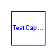
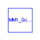
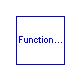
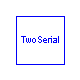
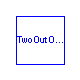
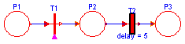
Modelica definition
model TestDelayDeterministic
Place01 P1(initialState=true);
Place10 P3;
Transition T1;
Place11 P2;
Extensions.TDelay T2(delay=5);
equation
connect(P1.outTransition, T1.inTransition);
connect(T1.outTransition, P2.inTransition);
connect(P2.outTransition, T2.inTransition);
connect(T2.outTransition, P3.inTransition);
T1.condition = time > 5;
end TestDelayDeterministic;
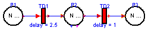
Modelica definition
model TestCapacity
Extensions.TDelay TD1(delay=2.5);
Extensions.TDelay TD2(delay=1);
Extensions.P10Capacity P3(num_tokens_start=1, N=10);
Extensions.P01Capacity P1(num_tokens_start=10, N=10);
Extensions.P11Capacity P2(num_tokens_start=20, N=100);
equation
connect(P1.outTransition, TD1.inTransition);
connect(TD1.outTransition, P2.inTransition);
connect(P2.outTransition, TD2.inTransition);
connect(TD2.outTransition, P3.inTransition);
end TestCapacity;
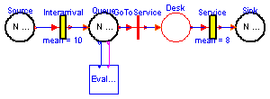
Modelica definition
model MM1_Queuing_system
Extensions.P10Capacity Sink(N=1000000);
Extensions.P01Capacity Source(num_tokens_start=1000000, N=1000000);
Extensions.P11Capacity Queue(N=1000);
Extensions.TDelayExp Interarrival(seed=998611);
Extensions.TNoCondition GoToService;
Extensions.TDelayExp Service(mean=8, seed=4556);
Place11 Desk;
Modules.EvalBlock EvalBlock1;
equation
connect(Source.outTransition, Interarrival.inTransition);
connect(Queue.outTransition, GoToService.inTransition);
connect(GoToService.outTransition, Desk.inTransition);
connect(Desk.outTransition, Service.inTransition);
connect(Interarrival.outTransition, Queue.inTransition);
connect(Service.outTransition, Sink.inTransition);
connect(Queue.Bchange, EvalBlock1.InChange);
connect(Queue.outTokens, EvalBlock1.InTokens);
end MM1_Queuing_system;
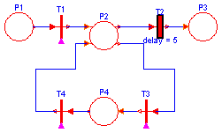
Modelica definition
model TestDelayPolicy
Extensions.TDelay T2(delay=5);
Place01 P1(initialState=true);
Place10 P3;
Place22 P2;
Place11 P4;
Transition T1;
Transition T3;
Transition T4;
equation
connect(P2.outTransition2, T2.inTransition);
connect(T2.outTransition, P3.inTransition);
connect(P1.outTransition, T1.inTransition);
connect(T1.outTransition, P2.inTransition2);
connect(P4.inTransition, T3.outTransition);
connect(P2.outTransition1, T3.inTransition);
connect(P4.outTransition, T4.inTransition);
connect(T4.outTransition, P2.inTransition1);
T1.condition = time > 5;
T3.condition = (time > 7.5) and (time < 8.0);
T4.condition = time > 12.5;
end TestDelayPolicy;
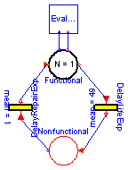
Modelica definition
model FunctionalNonfunctional
Extensions.P11Capacity Functional(num_tokens_start=1, N=1);
Extensions.TDelayExp DelayLifeExp(mean=49, seed=6544);
Place11 Nonfunctional;
Extensions.TDelayExp DelayRepairExp(mean=1, seed=984442);
Modules.EvalBlock EvalBlock1;
equation
connect(Functional.outTransition, DelayLifeExp.inTransition);
connect(DelayLifeExp.outTransition, Nonfunctional.inTransition);
connect(DelayRepairExp.outTransition, Functional.inTransition);
connect(Nonfunctional.outTransition, DelayRepairExp.inTransition);
connect(Functional.outTokens, EvalBlock1.InTokens);
connect(Functional.Bchange, EvalBlock1.InChange);
end FunctionalNonfunctional;
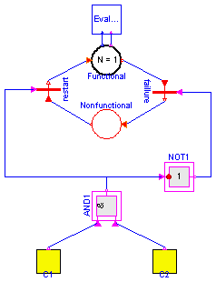
Modelica definition
model TwoSerial
Extensions.P11Capacity Functional(num_tokens_start=1, N=1);
Place11 Nonfunctional;
ModelicaAdditions.Blocks.Logical.AND AND1;
ModelicaAdditions.Blocks.Logical.NOT NOT1;
Modules.SingleComponent C1;
Modules.SingleComponentAlt C2;
Transition restart;
Transition faillure;
Modules.EvalBlock EvalBlock1;
equation
connect(AND1.outPort, NOT1.inPort);
connect(Functional.outTransition, faillure.inTransition);
connect(faillure.outTransition, Nonfunctional.inTransition);
connect(restart.outTransition, Functional.inTransition);
connect(Nonfunctional.outTransition, restart.inTransition);
connect(NOT1.outPort, faillure.conditionPort);
connect(AND1.outPort, restart.conditionPort);
connect(C1.BFunctional, AND1.inPort1);
connect(C2.BFunctional, AND1.inPort2);
connect(Functional.outTokens, EvalBlock1.InTokens);
connect(Functional.Bchange, EvalBlock1.InChange);
end TwoSerial;
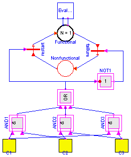
Modelica definition
model TwoOutOfThree
Extensions.P11Capacity Functional(num_tokens_start=1, N=1);
Place11 Nonfunctional;
ModelicaAdditions.Blocks.Logical.AND AND1;
ModelicaAdditions.Blocks.Logical.NOT NOT1;
Modules.SingleComponent C1;
Modules.SingleComponentAlt C2;
Transition restart;
Transition faillure;
Modules.SingleComponentAlt1 C3;
ModelicaAdditions.Blocks.Logical.AND AND2;
ModelicaAdditions.Blocks.Logical.AND AND3;
Modules.OR3 OR3_1;
Modules.EvalBlock EvalBlock1;
equation
connect(Functional.outTransition, faillure.inTransition);
connect(faillure.outTransition, Nonfunctional.inTransition);
connect(restart.outTransition, Functional.inTransition);
connect(Nonfunctional.outTransition, restart.inTransition);
connect(NOT1.outPort, faillure.conditionPort);
connect(C1.BFunctional, AND1.inPort1);
connect(AND1.inPort2, C2.BFunctional);
connect(C2.BFunctional, AND2.inPort1);
connect(C3.BFunctional, AND2.inPort2);
connect(C1.BFunctional, AND3.inPort1);
connect(C3.BFunctional, AND3.inPort2);
connect(AND1.outPort, OR3_1.inPort1);
connect(AND2.outPort, OR3_1.inPort2);
connect(AND3.outPort, OR3_1.inPort3);
connect(OR3_1.outPort, NOT1.inPort);
connect(OR3_1.outPort, restart.conditionPort);
connect(Functional.outTokens, EvalBlock1.InTokens);
connect(Functional.Bchange, EvalBlock1.InChange);
end TwoOutOfThree;
HTML-documentation generated by Dymola Tue Apr 30 22:44:40 2002
.